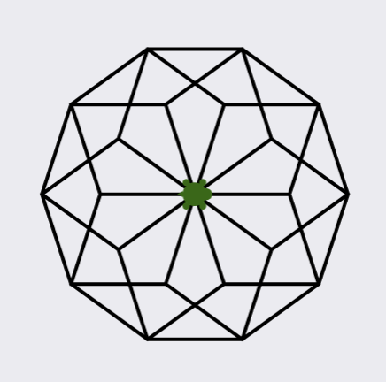

Markdown
Contents
Markdown#
You can add formatting to your text cells using Markdown syntax. Below are most of the formatting options you are likely to want; just double click the cell they are in to see what it looks like in Markdown (and then Run the cell to make it look like regular text again). For more details, see the guide linked above.
Sections#
To create a section, write a new heading with the hash symbol before it. Multiple hash symbols are used for sub-headings, with the number of hashes dictating the level of the sub-heading.
Here’s a sub-sub-heading#
Containing a sub-sub-sub-heading#
Emphasis#
To emphasise text, surround it in asterisks *text*, like so: this is important. One level of asterisks gets you italicised text, two gets you bold text, and three gets you italicised bold text.
Lists#
Here’s an ordered list:
Green eggs
Ham
and here’s an unordered list, with a sublist:
Journey to the:
West
Centre of the Earth
River Sea
Code#
If you want to include a snippet of code, surround it with backticks `code` like so: some interesting code. If it is a multiline-snippet, indent it by four spaces:
terry = Turtle()
terry.forward(50)
terry.left(30)
Links#
The basic format for links is [link text](thing to link to). For example, the Wikipedia page for Python can be found here, and the section in this notebook on emphasis in Markdown can be found here.
Images#
Images are similar to links: . For example, there is a file called “rotated-pentagons.png” in the “images” folder, so  produces the following: 
The description given becomes “alt text”, which is good practice to include; it improves accessibility and can help if the image cannot be displayed.
Annoyingly, Windows and MacOS/Linux have different conventions on which slash to use, so paths written for one will not work for the other. The easiest way of getting around this is to just include the images in the same folder as the notebook.
Tables#
Tables are best seen by example: just double click this cell to reveal how the following table is formatted.
Operator |
Description |
|---|---|
|
less than, less than or equal to |
|
greater than, greater than or equal to |
|
equal to |
|
not equal to |
Optional: writing maths using \(\LaTeX\)#
You might have noticed that some notebooks have nicely-formatted mathematics, like this:
This is written in LaTeX (pronounced lay-tek), a typesetting language widely used in mathematics. Most course material for most maths modules is written in LaTeX, and many students choose to use it to produce their honours projects. Here we will list some of the very-commonly used LaTeX commands; for more see this quick guide, this webpage (recommended), or this more extensive guide.
Entering math mode#
To typeset maths using LaTeX, you must enter math-mode using either $ some maths $, which renders the maths inline with your text (e.g. \(\sin(0) = 0\)) or \\[ some maths \\], which renders it in “display mode”:
\[ \sin(0) = 0. \]
Greek symbols#
To obtain Greek symbols, write them out in English with a preceding backslash: \alpha gives \(\alpha\). Most upper-case symbols can be obtained by capitalising the command: \Delta gives \(\Delta\), which is upper-case \(\delta\). There is no command for upper-case letters that coincide with Latin characters (for example, no \Alpha or \Rho).
Superscripts and subscripts#
Within math-mode, you can create superscripts using ^ and subscripts using _, e.g. \(x_0^3\). If you need multiple characters in super- or sub-script, you need to group them with braces: x^{12} produces \(x^{12}\).
Fractions#
Fractions are typeset using \frac{a}{b}, so that \frac{1}{1 - p^{-s}} renders as \(\frac{1}{1 - p^{-s}}\).
Named functions#
Many named functions are defined as LaTeX commands, which you should use instead of just writing the function normally: sin(0) produces \(sin(0)\), while \sin(0) properly produces \(\sin(0)\).
Sums and integrals#
To produce a sum, use \sum_{lower limit}^{upper limit}, e.g. \sum_{n = 1}^{\infty} \alpha^s produces \(\sum_{n = 1}^{\infty} \alpha^s\). You can exclude the lower limit or upper limit as necessary. When written in display mode, the sum will expand to be more readable:
\[ \sum_{n = 1}^{\infty} \alpha^s \]
The same principles apply to integrals (\int_{lower}^{upper}):
\[ \sum_{k = N + 1}^{\infty} \frac{1}{k^2} < \int_N^\infty \frac{1}{t^2} \mathop{dt}. \]
The typesetting of \(\mathop{dt}\) seems to be a point of great debate.
Matplotlib#
It’s worth noting that you can use LaTeX in your Matplotlib plots. For example:
import matplotlib.pyplot as plt
import numpy as np
%matplotlib inline
x = np.arange(-np.pi, 3/2*np.pi, 0.01)
y = np.sin(x)
y2 = y2 = x - x**3/6 + x**5/120
fig, ax = plt.subplots()
# Note that the strings have an "r" before them.
# This stops Python from messing with the backslashes in the LaTeX commands.
ax.plot(x, y, color="red", label=r"$\sin(x)$")
ax.plot(x, y2, color="b", linestyle=':', linewidth=3, label=r"$x-x^3/3!+x^5/5!$")
ax.scatter(np.pi/2, 1, marker="*", color="orange", s=200, zorder=2)
ax.text(np.pi/2, 1.5, r"$x = \frac{\pi}{2}$")
ax.set_xlabel("x")
ax.set_ylabel("y")
ax.legend()
ax.set_title("Comparison of sine with its three-term MacLaurin series");